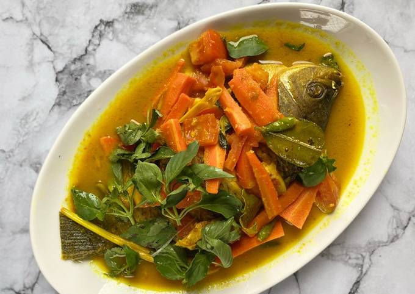

Destinasi kuliner terbaik untuk Anda yang merindukan cita rasa masakan otentik, kaya rempah, dan diolah dengan penuh cinta. Nikmati kelezatan di setiap suapannya
"Berawal dari kecintaan terhadap keanekaragaman kuliner nusantara, Lida Kuliner hadir untuk menyajikan hidangan berkualitas tinggi bagi Anda dan keluarga. Kami percaya bahwa makanan yang enak tidak hanya mengenyangkan perut, tetapi juga menghangatkan hati dan menciptakan momen kebersamaan yang berharga. Setiap bahan yang kami gunakan dipilih secara ketat dari petani dan pemasok lokal pilihan untuk memastikan kesegaran, kebersihan, dan kualitas rasa terbaik di setiap piring yang tersaji di meja Anda."
Menu Paling Dicari Rekomendasi hidangan spesial chef kami yang paling disukai oleh para pelanggan setia.
.jpg)
|
Daging ayam pilihan yang empuk, dibalut bumbu rempah meresap dan olesan madu murni, dibakar sempurna dengan aroma smoky yang menggoda. |
|
 |
Ikan gurame segar dengan kuah kaldu kuning yang kaya rempah, berpadu rasa asam dan pedas yang menyegarkan tenggorokan. |

|
Nasi goreng bumbu rahasia khas Lida Kuliner, dilengkapi suwiran ayam, telur, dan sayur sayuran di atasnya. |
"Tempatnya nyaman banget buat makan bareng keluarga. Rasanya benar-benar otentik, bumbunya berasa banget di lidah, dan pelayanannya ramah. Pasti bakal balik lagi!"
— Ibu Siska, Pelanggan Setia
"Ayam bakar madunya juara! Empuk dan manis gurihnya pas. Sangat direkomendasikan buat pecinta kuliner lokal."
— Bapak Reza, Food Blogger
Jangan tunda selera makan Anda. Kunjungi restoran kami hari ini di jalan dayanu ikhsanudin Buka dari JAM 08:00-23:00 WITA atau pesan secara online untuk dinikmati di rumah bersama orang tersayang.